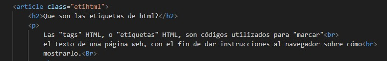
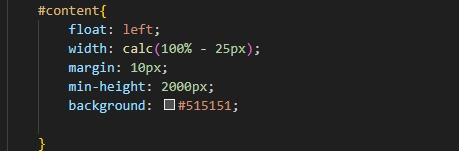
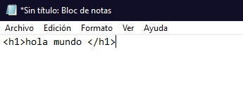
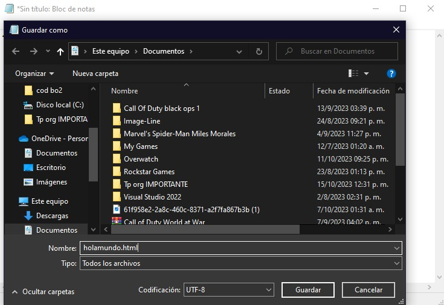
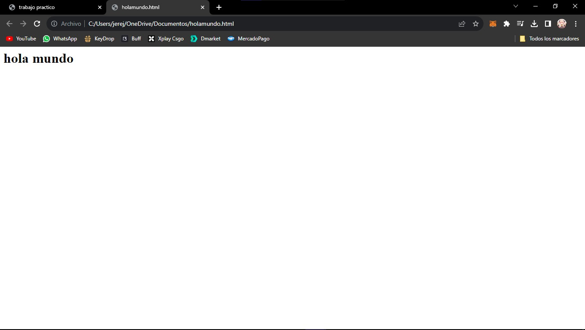

Html 5 ¿que es?
HTML, siglas en inglés de HyperText Markup Language (‘lenguaje de marcado de hipertexto’),
hace referencia al lenguaje de marcado para la elaboración de páginas web.
Es un estándar que sirve de referencia del software que conecta con la elaboración
de páginas web en sus diferentes versiones, define una estructura básica
y un código (denominado código HTML) para la definición de contenido de una página web
como texto, imágenes, videos, juegos, entre otros

Historia de html
El origen de HTML se remonta a 1980, cuando el físico Tim Berners-Lee,
investigador del CERN (Organización Europea para la Investigación Nuclear)
propuso un nuevo sistema de “hipertexto” para compartir documentos.
Los sistemas de hipertexto habían sido desarrollados años antes.
Que son las etiquetas de html?
Las "tags" HTML, o "etiquetas" HTML, son códigos utilizados para "marcar"
el texto de una página web, con el fin de dar instrucciones al navegador sobre cómo
mostrarlo.
Por ejemplo, puedes utilizar etiquetas HTML para aplicar cursivas, crear saltos de línea,
insertar objetos multimedia, crear listas con viñetas o para definir diferentes tipos de contenido
en una página web, como encabezados, párrafos, imágenes, enlaces, formularios y mucho más.
Como funcionan las etiquetas?
Las etiquetas se crean con usando "<>"
algunas necesitan un cierre que se crea con el mismo nombre
de la etiqueta y un "<>" al principio con una barra /

Que es css?
CSS (siglas en inglés de Cascading Style Sheets), en español «Hojas de estilo en cascada»,
es un lenguaje de diseño gráfico para definir y crear la presentación de un documento estructurado
escrito en un lenguaje de marcado Es muy usado para establecer el diseño visual de los documentos web,
e interfaces de usuario escritas en HTML o XHTML

Para que sirve css?
La tecnología CSS está diseñada para marcar la separación del contenido de las páginas web y
la forma de presentación de estas. Lo que genera múltiples beneficios, como:
-presentar el documento final en diferentes estilos (pantalla, voz, impresión)
-tener un sitio web responsivo;
-evitar hacer archivos demasiado pesados;
-definir el estilo visual de todo un sitio web. Así, si cambiamos una página, cambiarán todas automáticamente;
-trabajar con estándares y separar (hasta cierto punto) la estructura de la presentación logrando un trabajo más definido;
-provee más flexibilidad y control en las especificaciones del sitio web;
-simplifica la creación de la página.
Como se usa css?
la sintaxis de css se basa en 3 puntos
elemento{
color: red;
}
elemento = selector de el elemento a editar
color = atributo
red = el valor

Como puedo programar en html?
Para poder programar en html no necesitamos nada mas que un editor de texto, puede ser cualquiera
como el editor de texto de windows o algun otro como vim o otros;
Empezaremos con un hola mundo hay muchas formas de imprimir texto en html como el p para parrafos o el h1
para para empezar usaremos el h1 que es mas utilizado para titulos, pondremos <> y en medio escribiremos h1
y escribiremos yo que queramos en este caso un "hola mundo" y lo cerraremos con un <> pero antes del h1 pondremos /

es importante que a la hora de guardar el archivo lo guardemos con la extencion .html

asi se veria nuestro hola mundo una vez terminado
